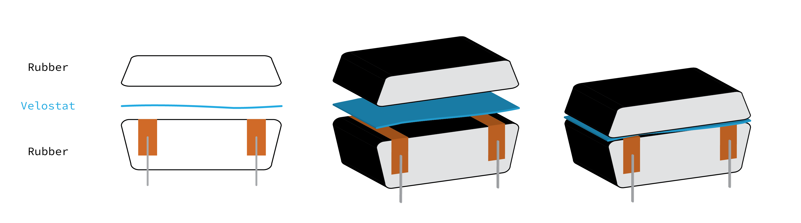
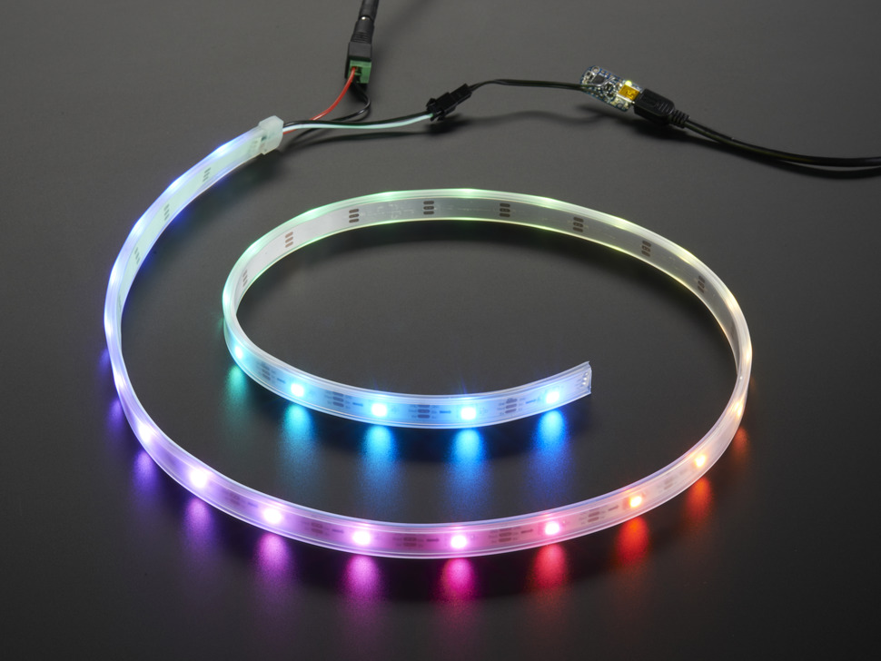

Week 7: Electronic Output Devices
Outline:
This week, I experimented with output devices and began developing an input sensor using Velostat.
Input Device:
I plan to design a MIDI controller for my final project, as it integrates many of the fabrication techniques we've learned throughout the semester. Music is constrained by the instruments on which it is made, and designing novel MIDI controllers allows for new types of expression through sound. A popular input device on MIDI controllers is the pad, which is responsive to pressure. More pressure means a louder sound or maybe a different tonal envelope.
To attempt to replicate this, I used Velostat. This is a resistive material that changes resistivity with applied pressure. After some initial testing, my setup is as follows: a bottom layer of rubber with a strip of copper tape on each side, a middle layer of thin Velostat, and a top layer of rubber which is pressed to induce resistivity changes. I soldered leads on to the copper tape to connect the circuit to a breadboard. See below for a schematic of the overall device.
The sensor is very responsive at times, but gets stuck or shifts values at other. It is very inconsistent. I think there are 2 main things I can do to combat this. First, I will iterate on my sensor design with different materials to give a sturdier, less flexible structure. Second, I will filter values in the code
Output Device:
I tried out using a variety of output devices this week to get more comfortable with circuitry in general. This included RGB LEDs, LED strips, and Piezo buzzers. I continued working with the Arduino UNO as a MIDI device, which I figured out last week. This allows me to send note and velocity information directly to the computer, where it can be processed into a virtual instrument.
Adafruit NeoPixel LED Strand
I spent most of my time with output working with an Adafruit NeoPixel strand of 3 LEDs. I first soldered down the connection for the strip to the MCU. Then, after getting the basic circuitry set up, I moved on to code. This included running the strandtest example included with the NeoPixel library. I modified this example to respond to my input device. As I increase pressure on the Velostat button, the brightness of the LEDs increases. The Velostat button is controlled through a simple class, which I will likely expand as my signal processing becomes more complex than just a direct read. See code below.
// Modified from NeoPixel strandtest example
class VeloButton {
int pin;
public:
VeloButton(int pinRead) {
pin = pinRead;
}
int read() {
return analogRead(pin);
}
};
VeloButton but1(A0);
int val;
#include
#ifdef __AVR__
#include // Required for 16 MHz Adafruit Trinket
#endif
#define LED_PIN 6
#define LED_COUNT 3
Adafruit_NeoPixel strip(LED_COUNT, LED_PIN, NEO_RGBW + NEO_KHZ800);
int interval = 100;
unsigned long previousMillis = 0;
unsigned long currentMillis;
void setup() {
// put your setup code here, to run once:
Serial.begin(9600);
strip.begin(); // INITIALIZE NeoPixel strip object (REQUIRED)
strip.show(); // Turn OFF all pixels ASAP
strip.setBrightness(50); // Set BRIGHTNESS to about 1/5 (max = 255)
}
void loop() {
currentMillis = millis();
if (currentMillis - previousMillis > interval) {
previousMillis = currentMillis;
val = but1.read();
Serial.println(val);
if (val > 0) {
strip.setPixelColor(0, strip.Color(0, val, val, 50));
strip.setPixelColor(1, strip.Color(val, 0, val, 50));
strip.setPixelColor(2, strip.Color(val, val, 0, 50));
strip.show();
}
else {
for (int i = 0; i < strip.numPixels(); i++) {
strip.setPixelColor(i, strip.Color(0, 0, 0, 0));
}
strip.show();
}
}
} I designed a simple color-changing code to cycle through RGB values in each of the 3 LEDs on the strip every 10 ms. This signal was not connected to an input device. I measured the signal behavior on an oscilloscope. See code and oscilloscope image below. I used the Arduino delay() function in this simple case, but avoided it for my class-based Velostat input code.
#include
#define LED_PIN 6
#define LED_COUNT 3
Adafruit_NeoPixel strip(LED_COUNT, LED_PIN, NEO_RGBW + NEO_KHZ800);
void setup() {
strip.begin(); // INITIALIZE NeoPixel strip object (REQUIRED)
strip.show(); // Turn OFF all pixels ASAP
strip.setBrightness(50); // Set BRIGHTNESS to about 1/5 (max = 255)
}
void loop() {
colorVary();
}
int val;
void colorVary() {
for (int trial = 0; trial < 9; trial++) {
for (int i = 0; i < strip.numPixels(); i++) {
val = i+trial;
if (val % 3 == 0) {
strip.setPixelColor(i, strip.Color(127, 0, 0, 0));
}
else if (val % 3 == 1) {
strip.setPixelColor(i, strip.Color(0, 127, 0, 0));
}
else {
strip.setPixelColor(i, strip.Color(0, 0, 127, 0));
}
}
strip.show();
delay(10);
}
delay(100);
}

As expected, the time domain operates on the scale of 10 ms, where signal is sent. I tested the oscilloscope on strandtest as well, which has more varied time signals. Here, the Autoset feature was very innefective and brought me down to the scale of a few ns. I had to adjust manually for each time regime, which was determined by which color pattern was running at the time.